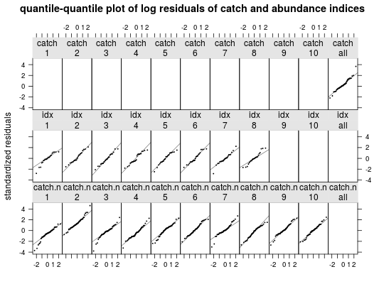

qqmath(x, data, ...)
a4aFitResiduals object with the standardized residualsqqplot with stardardized log residuals
Method to produce qqplots of standardized residuals
data(ple4) data(ple4.index) obj <- sca(ple4, FLIndices(ple4.index)) flqs <- residuals(obj, ple4, FLIndices(idx=ple4.index)) qqmath(flqs)